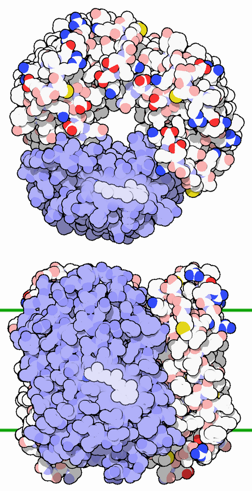
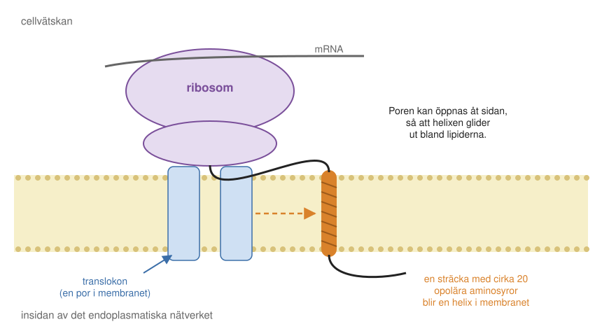
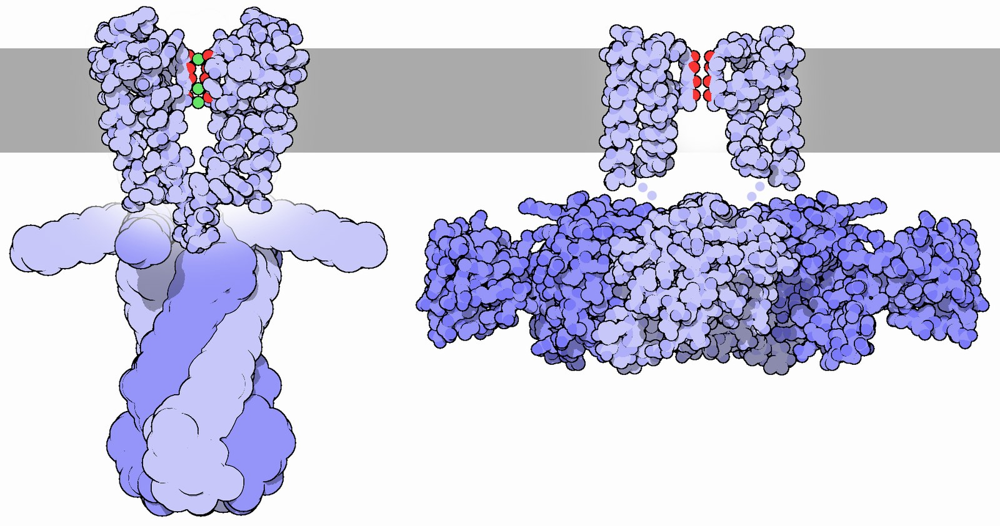
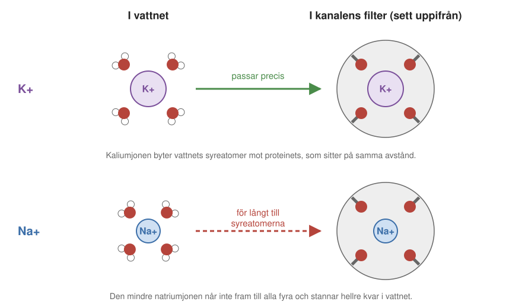
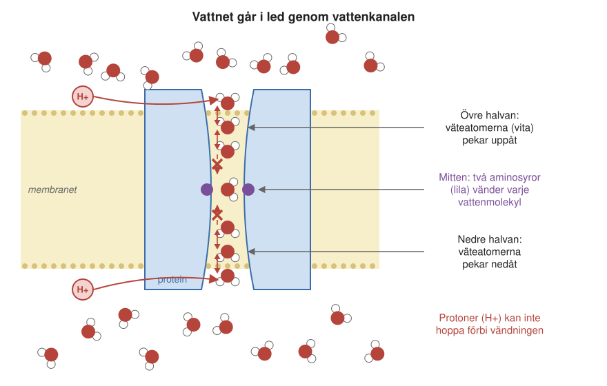
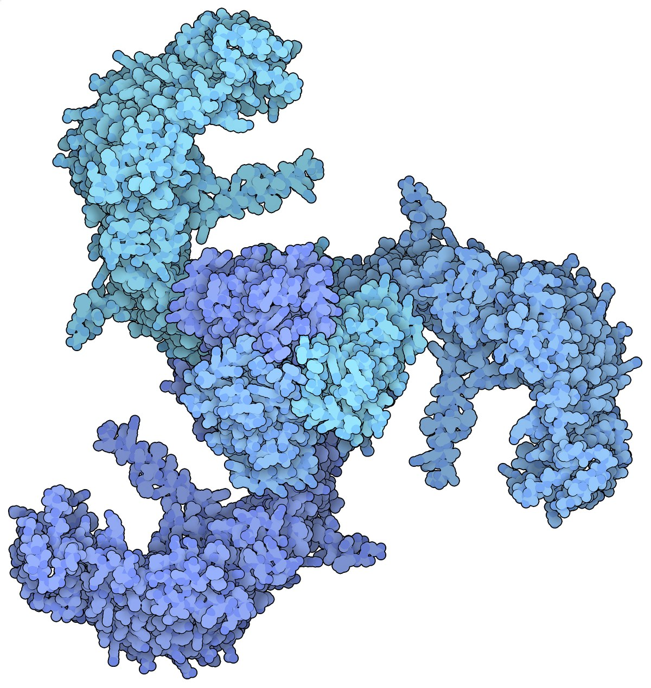
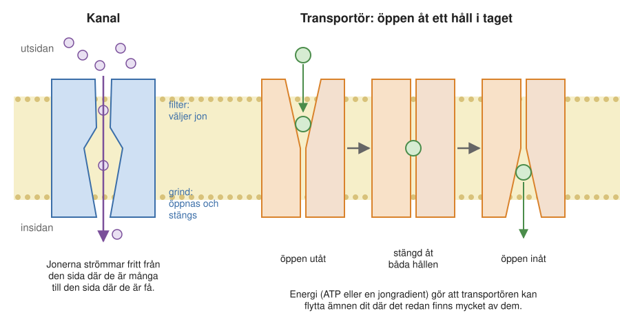
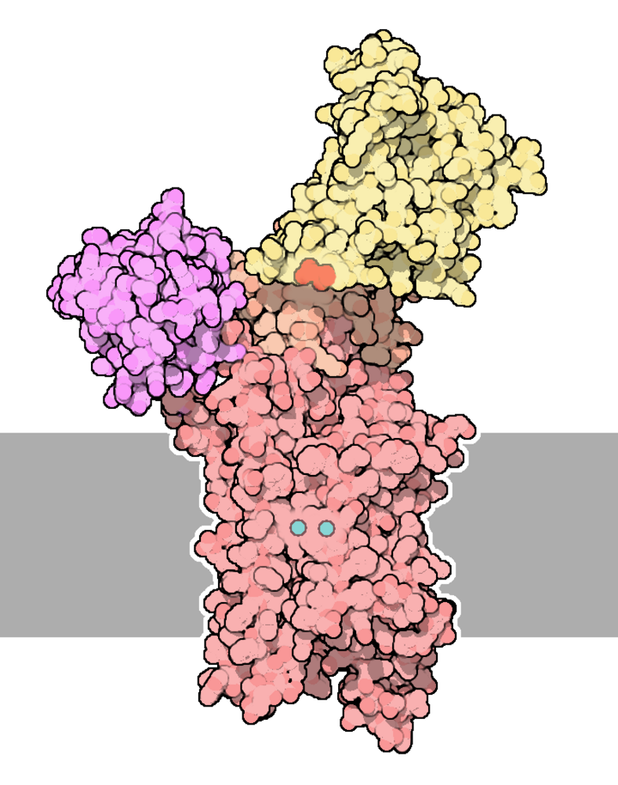
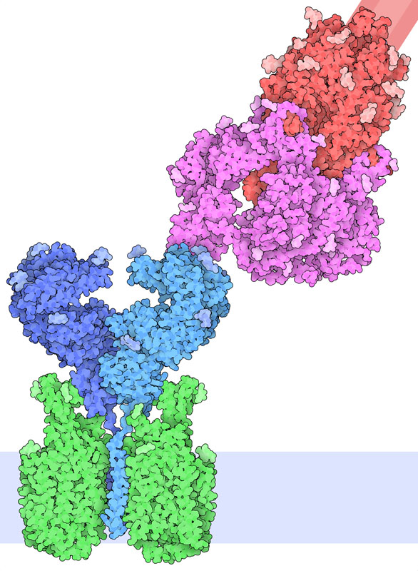

8 Membranproteiner
Ungefär hälften av alla läkemedel som används i dag verkar genom att binda till ett membranprotein, ett protein som sitter i en cells membran. Det gäller blodtrycksmediciner, medel mot astma och allergi, många psykofarmaka och en lång rad andra. Och de flesta vacciner riktar sig mot molekyler på ytan av ett virus eller en bakterie, ofta membranproteiner.
I förra kapitlet (Kapitel 7) såg vi hur lipiderna bildar membran, tunna hinnor som stänger in cellen och delar upp dess inre. Ett rent lipidmembran är en nästan tät vägg. Det som gör membranen levande och användbara är proteinerna som sitter i dem. De släpper in näring och joner, pumpar ut avfall, tar emot signaler och binder till grannceller. I det här kapitlet ser vi hur sådana proteiner är byggda, hur man tar reda på hur de ser ut, och hur några av dem fungerar.
8.1 Proteiner som trivs i fett
De flesta proteiner i kroppen är byggda för att lösa sig i vatten, inne i cellen eller i blodet. Membranproteinerna är byggda för en helt annan miljö: den feta, opolära mitten av ett lipiddubbelskikt. Ungefär 25–30 procent av alla våra gener innehåller ritningen till ett sådant protein. Vissa är nästan helt begravda i membranet, med bara små bitar som sticker ut på var sida. Andra har en stor del ute i vattnet och sitter bara fast i membranet med en liten krok. Det finns allt däremellan.
Membranproteinerna har många uppgifter:
- Kanaler öppnar en väg genom membranet för joner eller vatten.
- Transportörer och pumpar flyttar bestämda ämnen över membranet, ofta mot strömmen.
- Receptorer sitter som känselspröt på cellytan och känner av till exempel hormoner i blodet. När ett hormon binder skickar receptorn en signal in i cellen (Avsnitt 2.11.2).
- Enzymer i membranet utför kemiska reaktioner, till exempel i andningskedjan (Kapitel 9).
- Adhesionsproteiner håller ihop celler med varandra (Avsnitt 7.5.2).
Därför verkar så många läkemedel på membranproteiner
Att ungefär hälften av läkemedlen verkar på membranproteiner vet man eftersom man en gång gick igenom de mest använda läkemedlen och tog reda på vilka proteiner de binder till. Det är en större andel än man kunde vänta sig, eftersom membranproteinerna bara är 25–30 procent av alla proteiner.
Den största gruppen bland dem är de G-proteinkopplade receptorerna (förkortade GPCR). Vi har flera hundra olika sorter. De känner av hormoner, signalämnen i hjärnan, dofter och mycket annat. Även ljuset vi ser fångas av sådana receptorer: proteinet rodopsin i näthinnan, och några nära släktingar till det, absorberar ljus och sätter i gång en nervsignal. De receptorer som ger oss färgseendet är lite olika. En sort fångar helst blått ljus, en annan grönt och en tredje mer rödaktigt ljus, och hjärnan blandar ihop signalerna till färger.
Efter receptorerna kommer jonkanaler, som är avgörande för nervsignaler, och transportörer, till exempel de som tar upp socker från blodet. Även integrinerna, de proteiner som reser sig och fäster cellen vid en granncell (Avsnitt 7.5.2), är mål för vissa läkemedel. Resten av läkemedlen binder till enzymer inne i cellerna, till receptorer inne i cellkärnan eller direkt till DNA.
Varför är membranproteinerna så bra måltavlor? Främst för att de är lätta att komma åt. Ett läkemedel som tas upp i blodet når nästan alla celler i kroppen. Om målet sitter på cellytan behöver läkemedlet inte ta sig in i cellen, vilket ställer mycket högre krav: molekylen måste både lösa sig i vatten och kunna ta sig igenom membranets fettlager. Dessutom styr många receptorer på cellytan viktiga skeden i cellen, så en liten molekyl som binder till en receptor kan få stor verkan.
Av samma skäl riktar sig vacciner mot ytan av virus och bakterier. De antikroppar som vaccinet ger upphov till är stora proteiner som inte kan ta sig in i celler, så de måste binda till något som sitter på utsidan.
8.2 Hur ser ett membranprotein ut?
Hur ett protein är byggt för att sitta i fett började man förstå med den första bilden av ett membranprotein. Det proteinet följer oss genom hela det här avsnittet.
Bilden kom 1975. Proteinet heter bakteriorodopsin och kommer från en mikroorganism, Halobacterium, som lever i extremt salta sjöar och saltdammar. Trots namnet är den inte en bakterie utan en arké (Avsnitt 2.2). Den får energi direkt från solljuset med hjälp av bakteriorodopsin. Delar av dess cellmembran är så fullpackade med proteinet att molekylerna ordnar sig i ett regelbundet mönster, en platt kristall i membranets plan. Naturen hade själv gjort den kristall som forskarna behövde.
Richard Henderson och Nigel Unwin i Cambridge använde ett elektronmikroskop för att studera de platta kristallerna och kunde räkna fram en grov bild av proteinet. Den visade sju avlånga korvar som gick tvärs genom membranet. Korvarna förstod man snart måste vara alfahelixar, de spiralformade bitar som proteinkedjor gärna veckar sig till (Avsnitt 3.1.4). Hela proteinet är en enda kedja som löper fram och tillbaka genom membranet sju gånger, med korta slingor emellan. Av bilden byggde man en modell genom att såga ut skivor av balsaträ och limma dem på varandra.
Hur fångar proteinet solljuset? Mitt bland de sju helixarna sitter en liten extra molekyl, retinal, som inte är en del av proteinkedjan. När retinalet fångar en foton, en ljuspartikel, ändrar det form en aning och knuffar på helixarna runt omkring. Resultatet blir att en proton, en vätejon, flyttas från cellens insida till utsidan: en proton för varje foton.
Efter hand blir det fler protoner på utsidan än på insidan, och membranet laddas upp som ett batteri. Den laddningen kan cellen sedan använda till att tillverka ATP med hjälp av ATP-syntas, precis som i våra mitokondrier (Kapitel 9). Ljusets energi blir först elektrisk energi i membranet och sedan kemisk energi i ATP.
Bakteriorodopsin är påfallande likt rodopsinet i våra ögon, som vi mötte bland receptorerna ovan. Även det har sju helixar genom membranet och en molekyl retinal i mitten som fångar ljuset. Om de två proteinerna har ett gemensamt ursprung är oklart, men de är byggda efter samma mönster.
Ett bälte av kol och väte
Den grova bilden från 1975 visade hur kedjan går genom membranet. Den detaljerade struktur man har i dag visar också varför proteinet stannar där.
I dag känner man bakteriorodopsins struktur atom för atom (Figur 8.1). Ritar man ut alla aminosyrornas sidogrupper ser man att proteinet är mycket tätt packat, utan några större hålrum. Man hittar också lipidmolekyler som sitter fast på proteinets yta och följt med när proteinet renades fram.

Det mest intressanta syns när man ritar proteinets yta. Den del av ytan som vetter mot membranets mitt består nästan bara av kol och väte, det vill säga opolära, vattenskygga (hydrofoba) grupper (Avsnitt 7.2). Det är samma sorts atomer som i lipidernas svansar, och därför passar proteinet och lipiderna ihop. Vid membranets två ytor sitter i stället polära grupper med syre och kväve, som trivs med vattnet och lipidernas huvuden. Proteinet har ett bälte av kol och väte runt mitten och polära kanter. Det är en spegelbild av membranet självt, och det är den byggnaden som gör att proteinet stannar i membranet.
Allt detta bestäms av ordningen mellan aminosyrorna i kedjan, och därför kan man ofta se redan i sekvensen att ett protein hör hemma i ett membran. En alfahelix som ska gå tvärs genom membranet måste vara ungefär lika lång som membranets feta mitt är tjock, omkring 3 nanometer. (Hela dubbelskiktet, med lipidernas huvuden, är omkring 5 nanometer, se Avsnitt 7.2.2.) Det motsvarar ungefär 20 aminosyror. De flesta av dem är aminosyror med opolära sidogrupper, som leucin, isoleucin, valin och fenylalanin. En sådan sträcka med cirka 20 opolära aminosyror i rad är så karaktäristisk att man ofta kan se i en proteinsekvens var helixarna i membranet sitter, och därmed förutsäga om proteinet är ett membranprotein.
Hur kommer proteinerna in i membranet?
Ett protein med ett så fett bälte väcker en fråga: hur kommer det in i membranet? Membranproteiner tillverkas, som alla proteiner, av ribosomer. Men ett membranprotein kan inte först tillverkas färdigt ute i cellvätskan och sedan krypa in i membranet. Dess opolära delar skulle klumpa ihop sig i vattnet långt innan dess. Därför sätts proteinet in i membranet medan det tillverkas.
Hos eukaryota celler, celler med cellkärna, sätter sig ribosomen som tillverkar ett membranprotein på membranet i det endoplasmatiska nätverket. Hur den hittar dit, med hjälp av en adresslapp i början av kedjan, beskrivs i Avsnitt 12.4.1. Ribosomen sätter sig ovanpå en por i membranet som kallas translokon (Figur 8.2), och det växande proteinet skjuts in i poren allteftersom det tillverkas.
Vattenlösliga delar av kedjan kan gå rakt igenom poren till andra sidan. Men när en opolär sträcka på omkring 20 aminosyror kommer in i poren kan poren öppna sig åt sidan, som en dörr i porens vägg. Sträckan glider då ut bland lipiderna och blir en helix i membranet. Delar av kedjan mellan helixarna hamnar omväxlande på den ena och den andra sidan av membranet. Bakterier har en nästan likadan por i sitt cellmembran och sätter in sina membranproteiner på samma sätt.

8.3 Varför var membranproteinerna så svåra?
Bakteriorodopsin var länge det enda membranprotein vars struktur man kände. Det här avsnittet förklarar varför membranproteinerna var så mycket svårare än andra proteiner, och vad som till slut löste problemet. Hur man bestämmer ett proteins struktur med röntgenkristallografi och med kryoelektronmikroskopi beskrivs i Avsnitt 6.10. Här tar vi bara upp det som gäller membranproteinerna.
Först ett rent protein
Båda metoderna kräver att man har en ganska stor mängd av proteinet, helt fritt från andra proteiner. Förr var man hänvisad till proteiner som det finns mycket av i naturen. Man hämtade blod och lever från slakterier och renade fram proteinerna ur dem. Bakteriorodopsin var ett lyckat undantag: det var bara att ta membranen från mikroorganismen.
Med genteknik (Avsnitt 3.4.2) blev det mycket lättare. Man kan sätta in genen för ett mänskligt protein i bakterier, jäst eller odlade celler och få dem att tillverka stora mängder av det.
För membranproteiner återstår ändå ett problem. Proteinet måste lösas ut ur membranet, och då förlorar det de lipider som omger det. Man använder ett slags tvålmolekyler som lägger sig runt proteinets feta bälte, men proteinet blir ofta ostadigt och kan falla isär.
Kristaller och synkrotroner
När proteinet väl är rent kommer nästa hinder. För röntgenkristallografi (Avsnitt 6.10.1) måste proteinet bilda kristaller. De första proteinstrukturerna bestämdes på det sättet i slutet av 1950-talet.
Membranproteiner är mycket svårare att kristallisera än vattenlösliga proteiner. Utan sitt membran har de inget naturligt sammanhang att vila i, och det feta bältet vill inte packas tätt mot grannarna i en kristall. Man får pröva hundratals eller tusentals olika villkor, ofta med hjälp av robotar, och lyckas ändå sällan. Under lång tid fanns därför bara ett fåtal strukturer av membranproteiner.
Även när man har fått kristaller krävs stora resurser för att mäta på dem. Den bästa röntgenstrålningen för proteiner kommer från en synkrotron, en ringformad anläggning där elektroner rusar runt med nästan ljusets hastighet och sänder ut intensiv röntgenstrålning. Den europeiska synkrotronen i Grenoble i Frankrike är så stor att den dominerar stadsbilden sedd från luften. I Lund finns sedan 2016 MAX IV, en svensk synkrotron som kostade omkring 6 miljarder kronor.
Kryoelektronmikroskopi
Det som framför allt löste problemet med membranproteinerna var kryoelektronmikroskopi, kryo-EM (Avsnitt 6.10.2). Här behöver man inga kristaller. Proteinlösningen fryses blixtsnabbt till en tunn hinna av is, och datorn räknar fram en tredimensionell bild ur tiotusentals till hundratusentals bilder av enskilda molekyler.
Utrustningen är dessutom mycket billigare än en synkrotron. Ett kryoelektronmikroskop är ungefär tre meter högt och kostar omkring 50 miljoner kronor med installation. Institutionen för biokemi och biofysik vid Stockholms universitet driver två sådana mikroskop vid SciLifeLab i Solna, som forskare från hela Sverige kan använda.
Sedan omkring 2015 ger kryo-EM så skarpa bilder att man kan följa proteinkedjans väg och se hur aminosyrornas sidogrupper ligger. För membranproteiner och stora proteinkomplex är kryo-EM i dag den viktigaste metoden. Metodens utvecklare fick Nobelpriset i kemi 2017. En av dem var Richard Henderson, samme forskare som 1975 tog fram den första bilden av bakteriorodopsin.
AI förutsäger strukturen
Den senaste förändringen kommer inte från ett nytt instrument utan från datorer. År 2020 visade programmet AlphaFold att man i många fall kan förutsäga ett proteins struktur ur ordningen mellan aminosyrorna, med en noggrannhet nära ett experiments. Det gäller också membranproteiner, som var så svåra att bestämma med experiment. Hur AlphaFold fungerar, och Nobelpriset 2024, beskrivs i Avsnitt 16.7.
8.4 Jonkanaler
En nervsignal är en elektrisk puls som rör sig längs nervcellens membran. Pulsen uppstår genom att jonkanaler i membranet öppnar sig och stänger sig, en efter en, så att joner strömmar in och ut och spänningen över membranet ändras som en våg längs cellen. När pulsen når nervcellens ände släpps ett signalämne ut, som binder till nästa cell och öppnar jonkanaler där. Så går signalen vidare, växelvis elektriskt längs cellerna och kemiskt mellan dem. Det finns många olika jonkanaler, och de är helt avgörande för att nervsystemet ska fungera. Det här avsnittet visar hur en sådan kanal är byggd, med kaliumkanalen som exempel.
Den amerikanske forskaren Roderick MacKinnon var den förste som lyckades bestämma strukturen hos en jonkanal, med röntgenkristallografi. Många hade försökt med jonkanaler från människa, utan att lyckas. MacKinnon visste att bakterier har jonkanaler vars aminosyrasekvenser liknar våra, och att de därför förmodligen fungerar på samma sätt. Han tog fram ett hundratal bakteriella jonkanaler och försökte få dem att kristallisera. De flesta misslyckades, men några gav kristaller.
Genombrottet kom 1998 med strukturen hos en kaliumkanal från en bakterie. MacKinnon arbetade vid Rockefelleruniversitetet på Manhattan i New York och bodde i ett höghus intill laboratoriet, så nära att han kunde se in i labbet från sitt vardagsrumsfönster. Enligt honom själv blev datorns beräkningar av strukturen klara på nyårsafton. Universitetet var nästan tomt, och han satt ensam på sitt kontor och såg för första gången hur kanalen såg ut.
Kanalen består av fyra likadana proteinkedjor som tillsammans bildar ett knippe av helixar genom membranet. Mitt i knippet finns en smal kanal. I kristallen hade tre kaliumjoner fastnat inne i kanalen, så det var uppenbart var jonerna går. Kanalen visade sig vara uppbyggd av två delar med var sin uppgift (Figur 8.3):
- Längst upp finns ett mycket trångt filter. Det avgör vilka joner som kan passera, i det här fallet bara kalium.
- Längst ned finns en grind. Där kan helixarna tryckas ihop, så att kanalen stängs, eller dras isär, så att den öppnas. Så kan cellen bestämma när kanalen ska vara öppen.
När kanalen är öppen strömmar jonerna av sig själva, från den sida där de är många till den sida där de är få. Kanalen behöver ingen energi. Den bara öppnar en väg.

Filtrets hemlighet
Man visste länge att kaliumkanaler släpper igenom kalium ungefär tusen gånger lättare än natrium. Det är förvånande. Natrium och kalium står i samma kolumn i det periodiska systemet och är kemiskt mycket lika, och natriumjonen är mindre än kaliumjonen. Att en kanal stänger ute joner som är för stora är begripligt, men varför släpper den inte igenom de mindre?
Svaret syntes direkt i strukturen (Figur 8.4). I vatten är varje positiv jon omgiven av ett skal av vattenmolekyler, som vänder sina lätt negativa syreatomer mot jonen. Runt den större kaliumjonen sitter syreatomerna lite längre bort än runt natriumjonen. Filtret i kanalen är klätt med syreatomer från proteinet, som sitter på exakt samma avstånd som vattnets syreatomer runt en kaliumjon. En kaliumjon som kommer till filtret kan därför byta sina vattenmolekyler mot proteinets syreatomer utan att märka någon skillnad. Den glider lätt in och igenom.

För en natriumjon är filtret däremot för vidt. Den kan inte ha kontakt med alla syreatomerna samtidigt, och den skulle förlora det tätt sittande vattenskal som den trivs med. Det kostar för mycket energi, så natriumjonen stannar ute i vattnet. Kanalen sorterar inte efter storlek som ett såll, utan genom att efterlikna just kaliumjonens vattenskal.
Natriumkanaler är byggda på ett annat sätt. Deras filter är snarare vidare, och natriumjonen går igenom med en del av sitt vattenskal kvar. Där är det laddade aminosyror i filtret som gynnar natrium, och sorteringen är inte alls lika skarp som i kaliumkanalen.
Filtret avgör vilka joner som går igenom. Grinden avgör när de får gå. Många jonkanaler i nervcellerna öppnas och stängs av spänningen över membranet. De har en extra helix med flera positiva laddningar, som rör sig i membranet när spänningen ändras, ungefär som en strömbrytare, och drar upp grinden.
8.5 Akvaporiner: kanaler för vatten
Vatten kan ta sig genom ett lipidmembran även utan hjälp, men långsamt. I celler som behöver släppa igenom mycket vatten finns särskilda vattenkanaler, som kallas akvaporiner (eng. aquaporins). Den amerikanske läkaren Peter Agre upptäckte det första vattenkanalproteinet. Han delade Nobelpriset i kemi 2003 med Roderick MacKinnon.
Njurarna är ett bra exempel. De filtrerar varje dag fram omkring 200 liter så kallad primärurin ur blodet, men vi kissar bara ut ett par liter. Nästan allt vatten tas tillbaka in i kroppen genom vattenkanaler i njurarnas små rör. Hos personer med en ärftlig sjukdom där de här vattenkanalerna inte fungerar tas vattnet inte tillbaka. De kissar ut mycket stora mängder och måste dricka hela tiden.
Även vattenkanalen består av helixar genom membranet, med en mycket smal kanal i mitten. Den är så trång att vattenmolekylerna måste gå en i taget, i led. Kanalen släpper inte igenom några joner, inte ens protoner. Det är viktigt, eftersom cellen lever på en skillnad i protoner mellan membranets två sidor, som i bakteriorodopsinets batteri ovan (Kapitel 9).
Hur kan kanalen släppa igenom vatten men inte protoner? Det beror på en finess mitt i kanalen (Figur 8.5). I datorsimuleringar ser man att vattenmolekylerna i kanalens övre halva vänder sina väteatomer uppåt, och i den nedre halvan nedåt. Mitt i kanalen tvingar två aminosyror varje vattenmolekyl att vända sig. Protoner, som annars kan hoppa från vattenmolekyl till vattenmolekyl, kan inte följa med genom vändningen. Så kan kanalen släppa igenom miljarder vattenmolekyler i sekunden utan att cellen förlorar sin skillnad i protoner. Hur vattenkanalerna i njurarna och i växter regleras, med hormonet vasopressin och med en grind i kanalen, beskrivs i Avsnitt 10.4.3.

8.6 Tryckkänsliga kanaler
Grinden i många jonkanaler styrs, som vi såg, av spänningen över membranet. Vissa kanaler öppnas i stället av mekaniska krafter, när membranet sträcks eller trycks. Bakterier har tryckkänsliga kanaler som fungerar som säkerhetsventiler.
För att förstå varför behöver man veta en sak om vatten. Om två lösningar skiljs åt av ett membran som släpper igenom vatten men inte de lösta ämnena, strömmar vattnet mot den sida där det finns mest löst ämne, så att halterna jämnas ut. Det kallas osmos. Om en bakterie hamnar i regnvatten, som nästan inte innehåller några lösta ämnen, strömmar därför vatten in i den, och cellen sväller som en ballong. När membranet sträcks dras kanalens helixar isär och kanalen öppnas, så att lösta ämnen läcker ut och trycket sjunker. Kanalerna är precis inställda på att öppnas just innan cellen skulle spricka.
Vårt känselsinne använder en annan sorts tryckkänslig kanal, Piezo. Sedd uppifrån liknar den en propeller med tre långa, böjda blad, med själva kanalen i mitten (Figur 8.6). Från sidan ser man att proteinet är böjt som en skål. Det tvingar membranet runt omkring att böja sig på samma sätt, så att det bildas en liten grop i membranet där proteinet sitter. När något trycker på nervcellen, till exempel när man trycker på huden med en spets, plattas gropen ut. Då dras bladen isär och kanalen i mitten öppnas, så att joner strömmar in och en nervsignal uppstår.

Att Piezo böjer membranet har man kunnat se direkt. Forskare gjorde liposomer, små lipidblåsor (Avsnitt 7.2.4), med lite Piezo-protein i, och fotograferade dem i elektronmikroskop. Blåsorna var fint runda, utom på ett ställe där de hade en tydlig knyck. Precis där satt ett Piezo-protein.
Upptäckten av Piezo-kanalerna belönades med Nobelpriset i fysiologi eller medicin 2021. Hur tryckkänsliga kanaler också ger oss hörseln beskrivs i Avsnitt 10.4.4.1.
8.7 Transportörer och pumpar
En kanal kan bara släppa igenom ämnen från den sida där de är många till den sida där de är få. Men cellen behöver ofta göra tvärtom. En cell som lever på socker måste kunna hämta in socker från omgivningen även när det redan finns mer socker inne i cellen än utanför. Det kallas att transportera mot en koncentrationsgradient, och det kräver energi. Proteiner som gör det kallas transportörer, eller pumpar när energin kommer direkt från ATP. Energin kan också komma från att en annan sorts jon, till exempel protoner eller natriumjoner, samtidigt strömmar åt det håll den vill.
En transportör kan inte bara öppna ett hål, för då skulle ämnena strömma fritt åt båda hållen. Den måste vara mer raffinerad. Nästan alla transportörer fungerar enligt samma princip, som på engelska kallas alternating access: proteinet är öppet åt ett håll i taget (Figur 8.7).

Transportören har en bindningsplats för det ämne den ska flytta. I det första läget är den öppen mot utsidan, och ämnet kan binda. Sedan stängs den åt båda hållen, så att ämnet sitter instängt mitt i proteinet. Till sist öppnar den sig mot insidan, och ämnet kan lossna. Det avgörande är att transportören aldrig får vara öppen åt båda hållen samtidigt. Om man kopplar cykeln till en energikälla blir det en pump, som kan föra ämnen dit där det redan finns mycket av dem.
Energin kan kopplas till cykeln på flera sätt. Vissa transportörer byter ett ämne mot ett annat: när en liten molekyl som det finns mycket av inne i cellen får strömma ut, används energin till att föra in en större molekyl som det finns lite av utanför.
En annan variant byter natriumjoner mot protoner. Den fungerar som en hiss: en del av proteinet står still i membranet, medan en annan del med en bindningsplats för jonen glider upp och ned. Uppe är bindningsplatsen öppen utåt och nere öppen inåt. Strukturen hos en sådan transportör från en bakterie har bestämts av en forskargrupp vid Institutionen för biokemi och biofysik i Stockholm.
Kalciumpumpen drivs i stället direkt av ATP (Figur 8.8). Den sitter bland annat i musklerna, där den pumpar tillbaka kalciumjoner som släppts ut för att få muskeln att dra ihop sig, så att muskeln kan slappna av.
Pumpen är en komplicerad maskin. På den stora del som sticker ut i cellvätskan, inne i cellen, binder den ATP och klyver det. Energin får proteinets form att ändras, och formförändringen fortplantar sig ned genom proteinet till den del som sitter i membranet. Där öppnas och stängs vägen för kalciumjonerna enligt samma princip som ovan, öppen åt ett håll i taget. Det är inte ett filter som i kaliumkanalen som gör pumpen specifik, utan en ficka där kalciumjonerna binds mycket hårt men andra joner inte. Natrium-kaliumpumpen (Avsnitt 2.10) är nära släkt och fungerar på liknande sätt.

Transportörer kan också ställa till problem. Många bakterier har pumpar som spänner över både det inre och det yttre membranet och kastar ut antibiotika ur cellen innan de hinner verka. Sådana pumpar bidrar till att bakterier blir motståndskraftiga mot antibiotika.
8.8 Coronavirusets spikprotein
Det sista membranproteinet är ett som alla har hört talas om. I Avsnitt 2.1.1 såg vi att coronaviruset SARS-CoV-2 tar sig in i våra celler genom att dess spikprotein binder till proteinet ACE2 på cellytan, och att mRNA-vaccinerna bygger på den bindningen. Här ser vi på samma sak från membranets håll.
Viruset ser ut som en liten cell. Det har ett lipidmembran, som det har tagit med sig från den cell där det bildades, och innanför det finns arvsmassan, som består av RNA. Spikproteinet är ett membranprotein. Det är förankrat i virusets membran med korta helixar och har en stor del som sticker ut från ytan (Figur 8.9). Även ACE2 är ett membranprotein, med en helt normal uppgift: det är ett enzym som deltar i kroppens reglering av blodtrycket. Det är bara otur att viruset har utvecklat ett spikprotein som binder just till det.
När spikproteinet har fäst vid ACE2 tas viruset in i cellen i en liten membranblåsa (Avsnitt 7.8). Virusets membran smälter samman med blåsans, och RNA:t släpps ut i cellen. Cellen börjar då tillverka virusproteiner och nya kopior av RNA:t, som packas till nya viruspartiklar. De förs till cellytan i blåsor och släpps ut när blåsorna smälter samman med cellmembranet. Hela förloppet är en följd av membran som knoppas av och smälter samman.

Ett virus kartläggs på rekordtid
Det som hände i början av pandemin visar hur snabbt dagens molekylärbiologi kan arbeta:
- 26 december 2019 skrevs en patient med en okänd lunginfektion in på ett sjukhus i Wuhan i Kina.
- 11 januari 2020 publicerade kinesiska forskare virusets hela arvsmassa, omkring 30 000 nukleotider, på internet. Den liknade arvsmassan hos ett coronavirus som tidigare hittats hos fladdermöss. Därför tror man att viruset har gått över till människor från fladdermöss, kanske via något annat djur. Av likheten kunde man också sluta sig till att spikproteinet förmodligen binder till ACE2.
- 17 januari 2020 publicerade en forskargrupp i Tyskland ett färdigt PCR-test för viruset, som vilket laboratorium som helst kunde sätta upp (Avsnitt 3.7.1).
- Inom ett par månader hade man med kryoelektronmikroskopi bestämt hur spikproteinet ser ut, även bundet till ACE2.
Det tog bara några veckor från den första patienten till att man visste hur viruset var uppbyggt och hade ett test. Som jämförelse tog det ett par år efter att aids upptäcktes i början av 1980-talet innan man hade isolerat viruset bakom sjukdomen, hiv, och ytterligare tid innan dess arvsmassa var kartlagd. Sedan 2020 har det publicerats mer än 400 000 vetenskapliga artiklar om SARS-CoV-2.
Vacciner och nya varianter
Ett mRNA-vaccin innehåller ritningen till spikproteinet, inslagen i små partiklar av lipider. Partiklarna tas upp i cellerna i små membranblåsor, ungefär som viruset självt, och mRNA:t tar sig ut ur blåsan och in i cellvätskan. Cellerna tillverkar då en tid spikprotein. Eftersom det är ett membranprotein hamnar det i cellernas membran och visas upp på cellytan, där immunförsvaret kan upptäcka det. Kroppen tillverkar antikroppar, och några av dem sätter sig precis där spikproteinet skulle ha bundit till ACE2.
Viruset förändras dock hela tiden. Mutationer i spikproteinet gjorde att de första antikropparna inte längre fastnade lika bra. Strukturer av spikproteinet från varianten omikron med bundna antikroppar visar exakt vilka mutationer som gör att en antikropp mot en tidigare variant inte längre passar. Därför har vaccinerna fått uppdateras med nya versioner av spikproteinet.
Med tiden har covid-19 också blivit en lindrigare sjukdom för de flesta. Det beror framför allt på att nästan alla nu har ett visst skydd genom vaccin eller tidigare infektion.
8.9 Sammanfattning
- Membranproteiner utgör ungefär 25–30 procent av alla proteiner. De fungerar som kanaler, transportörer, pumpar, receptorer och enzymer. Ungefär hälften av alla läkemedel riktar sig mot membranproteiner, eftersom de är lätta att nå på cellytan. De flesta vacciner riktar sig mot molekyler på ytan av virus och bakterier.
- Den del av ett membranprotein som sitter i membranet har en yta av kol och väte, som passar ihop med lipidernas svansar. Ofta består den av helixar med omkring 20 opolära aminosyror, som sätts in i membranet genom en por, ett translokon, medan proteinet tillverkas.
- Membranproteiner är svåra att kristallisera. Kryoelektronmikroskopin, som inte kräver kristaller, har löst strukturen hos många av dem.
- En jonkanal har ett filter som väljer jon och en grind som öppnas och stängs. Kaliumkanalens filter efterliknar kaliumjonens vattenskal, och därför släpper det igenom kalium men inte det mindre natriumet.
- Vattenkanaler (akvaporiner) släpper igenom vatten men inte protoner. I njurarna tar de tillbaka nästan allt vatten ur primärurinen. Tryckkänsliga kanaler öppnas när membranet sträcks eller plattas ut.
- Kanaler låter ämnen strömma från där de är många till där de är få. Transportörer och pumpar kan med hjälp av energi flytta ämnen åt andra hållet. De är öppna åt ett håll i taget.
- Coronavirusets spikprotein och dess mottagare ACE2 är båda membranproteiner. Deras struktur visade var antikropparna ska binda, och varför de nya varianterna kräver uppdaterade vacciner.
8.10 Nyckelbegrepp
- membranprotein – Ett protein som sitter i ett membran, helt eller delvis. Ungefär 25–30 procent av alla proteiner är membranproteiner. De delar som går genom membranet är oftast alfahelixar med omkring 20 opolära aminosyror.
- receptor – Ett protein, ofta på cellytan, som binder en signalmolekyl, till exempel ett hormon, och för signalen vidare in i cellen.
- G-proteinkopplad receptor – Den största gruppen receptorer på cellytan (GPCR), med sju helixar genom membranet. Känner av hormoner, signalämnen, dofter och ljus, och är mål för många läkemedel.
- bakteriorodopsin – En ljusdriven protonpump i membranet hos saltälskande mikroorganismer. Det första membranprotein vars struktur bestämdes, 1975.
- retinal – En liten molekyl som sitter inne i bakteriorodopsin och i rodopsin i ögat. Fångar ljus och ändrar då form.
- translokon – En proteinpor i det endoplasmatiska nätverkets membran (och i bakteriers cellmembran). Ribosomer skjuter in nya proteiner i den. Vattenlösliga delar går igenom poren, och opolära sträckor glider ut åt sidan och blir helixar i membranet.
- jonkanal – Ett membranprotein som bildar en väg för en viss sorts jon genom membranet. Jonerna strömmar av sig själva från där de är många till där de är få.
- selektivitetsfilter – Den trånga del av en jonkanal som avgör vilka joner som släpps igenom. I kaliumkanalen efterliknar filtret kaliumjonens vattenskal.
- grind – Den del av en kanal som kan öppnas och stängas, så att cellen kan styra när joner får passera.
- vattenskal – De vattenmolekyler som sitter närmast en jon i vatten, med syreatomerna vända mot en positiv jon.
- koncentrationsgradient – En skillnad i halten av ett ämne mellan två ställen, till exempel mellan membranets två sidor. Ämnen strömmar av sig själva från hög till låg halt.
- transportör – Ett membranprotein som flyttar ett bestämt ämne över membranet. Med hjälp av energi kan den flytta ämnet mot en koncentrationsgradient.
- alternating access – Principen för hur transportörer arbetar: proteinet är öppet åt ett håll i taget, utåt, stängt eller inåt, men aldrig åt båda hållen samtidigt.
- akvaporin – Vattenkanal (eng. aquaporin): ett membranprotein som släpper igenom vatten snabbt, en molekyl i taget, men inte protoner. I njurarna tar akvaporiner tillbaka nästan allt vatten ur primärurinen.
- osmos – Att vatten strömmar genom ett membran mot den sida där det finns mest löst ämne, så att halterna jämnas ut.
- kalciumpump – En pump som med energi från ATP flyttar kalciumjoner över ett membran, till exempel så att en muskel kan slappna av.
- Piezo – En tryckkänslig jonkanal med tre böjda blad som böjer membranet. När membranet plattas ut öppnas kanalen. Används bland annat i känselsinnet.
- spikprotein – Det stora membranproteinet på coronavirusets yta, som binder till ACE2 på våra celler och tar viruset in i dem.
- ACE2 – Ett enzym på ytan av bland annat lungans celler, som deltar i regleringen av blodtrycket. Coronavirusets spikprotein binder till det.
8.11 Testa dig själv
Flervalsfrågor
Välj ett svar och tryck på Rätta. Svarsalternativen visas i ny ordning varje gång.
Fundera vidare
8.1 Förklara varför en sträcka på omkring 20 opolära aminosyror i rad tyder på att ett protein är ett membranprotein.
8.2 Varför var det så länge svårt att bestämma strukturen hos membranproteiner, och varför har kryoelektronmikroskopi ändrat det?
8.3 Kaliumkanalen består av två delar med var sin uppgift, ett filter och en grind. Förklara vad de två delarna gör och varför kanalen inte behöver någon energi.
8.4 Följ coronaviruset från det att det träffar en cell i luftvägarna tills nya virus lämnar cellen. Vilka membranprocesser är inblandade, och var kan vaccinet stoppa förloppet?
Hjälp oss att förbättra kapitlet
Hittade du ett fel, eller något som var svårt att förstå? Skicka ett förslag i förslagsformuläret (kräver inloggning med SU-konto). Lärarna läser alla förslag inför nästa version av boken.
8.12 Läs mer
- Membranprotein och Jonkanal på svenska Wikipedia.
- Nobelpriset i kemi 2003, populärvetenskaplig beskrivning av Peter Agres vattenkanaler och Roderick MacKinnons kaliumkanal (på engelska).
- Potassium Channels, Molecule of the Month på PDB-101 (på engelska), med bilder av hur filtret fungerar.
- Bacteriorhodopsin på engelska Wikipedia, om ljuspumpen som gav den första bilden av ett membranprotein.
- MAX IV-laboratoriet på svenska Wikipedia, om den svenska synkrotronen i Lund.